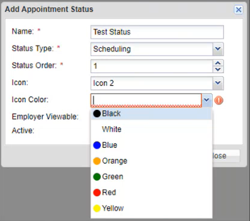

Adding an Appointment Status and Appointment Status Indicator Icon
To Add an Appointment Status and Appointment Status Indicator icon:
Click the Client Admin tab.
On the left Navigational panel, click Appointment Status Indicator. The Appointment Status window appears to the right.
On the Appointment Status window, click the Add icon. The Add Appointment Status window appears.

On the Appointment Status window, fill in the Appointment Status Name. The Appointment Status Name must be unique.
In the Status Typedropdown textbox, select Scheduling for the appointment status to display on the calendar.
In the Status Ordertextbox, select an order value.
In the Icon dropdown textbox, select one of five icon options available.
In the Icon Color dropdown textbox, select one of seven color options available for the icon. If an Icon Color is not selected, a warning icon displays to the left of the Icon Color dropdown textbox indicating information is missing.